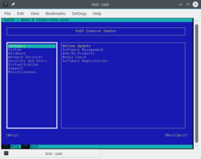

YaST in the TerminalThe YaST modules can also be used in a terminal (ncurses mode) - this is very useful for servers with no graphical environment running, for remote access via SSH, or in case your graphical environment fails. Simply run yast as root in a terminal.
yast

Navigate using arrow keys, Enter and Alt+[highlighted letters] (e.g. Alt+Q to quit).